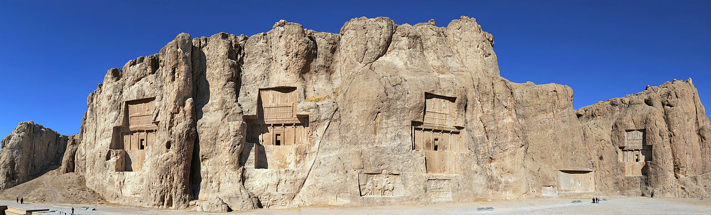

According to tablets inscribed in Old Persian and Elamite found at Persepolis, it seems that Darius planned this impressive complex of palaces not only as the seat of government but also, and primarily, as a show place and a spectacular center for the receptions and festivals of the Achaemenian kings and their empire. In dealing with the Persepolis platform, we have to understand that the northern part of the Terrace, consisting mainly of the Audience Hall of the Apadana, the Throne Hall, and the Gate of Xerxes, represented the official section of the Persepolis complex, accessible to a restricted public. The other part held the Palaces of Darius and Xerxes, the Harem, the Council Hall, and such. Following is a brief enumeration of the buildings, and their most outstanding features, that constitute the Terrace complex.

Cyrus the Great respected the customs and religions of the lands he conquered. This became a very successful model for centralized administration and establishing a government working to the advantage and profit of its subjects. In fact, the administration of the empire through satraps and the vital principle of forming a government at Pasargadae were the works of Cyrus. What is sometimes referred to as the Edict of Restoration described in the Bible as being made by Cyrus the Great left a lasting legacy on the Jewish religion. he is the only non-Jewish figure in the Bible to be called so. Cyrus the Great is also well recognized for his achievements in human rights, politics, and military strategy, as well as his influence on both Eastern and Western civilizations. Cyrus has played a crucial role in defining the national identity of modern Iran. The Achaemenid influence in the ancient world eventually would extend as far as Athens, where upper-class Athenians adopted aspects of the culture of the ruling class of Achaemenid Persia as their own. Darius the Great, the fourth king of the Achaemenid Empire, ruled over the Persian Empire when it was at its largest, stretching from The Caucasus and West Asia to what was then Macedonia (today’s Balkans), the Black Sea, Central Asia, and even into Africa including parts of Libya and Egypt. He unified the empire through introducing standard currency and weights and measures; making Aramaic the official language and building roads. The Behistun Inscription, a multilingual relief carved into Mount Behistun in Western Iran, extolls his virtues and was a critical key to deciphering cuneiform script. Its impact is compared that of the Rosetta Stone, the tablet that enabled scholars to decipher Egyptian hieroglyphics.
Achaemenid Empire was conquered by Alexander the Great and later replaced by the Seleucid Empire (312-63 BCE), Parthia (247 BCE-224 CE), and the Sassanian Empire (224 - 651 CE) in succession. The Sassanian Empire was the last of the Persian governments to hold the region before the Muslim Arab conquest of the 7th century CE.
The ancient Persians of the Achaemenid Empire created art in many forms, including metalwork, rock carvings, weaving and architecture. As the Persian Empire expanded to encompass other artistic centers of early civilization, a new style was formed with influences from these sources. Early Persian art included large, carved rock reliefs cut into cliffs, such as those found at Naqsh-e Rustam, an ancient cemetery filled with the tombs of Achaemenid kings. The elaborate rock murals depict equestrian scenes and battle victories. Ancient Persians were also known for their metalwork. In the 1870s, smugglers discovered gold and silver artifacts among ruins near the Oxus River in present-day Tajikistan.
The artifacts included a small golden chariot, coins and bracelets decorated in a griffon motif. (The griffon is a mythical creature with the wings and head of an eagle and the body of a lion, and a symbol of the Persian capital of Persepolis.) British diplomats and members of the military serving in Pakistan brought roughly 180 of these gold and silver pieces—known as the Oxus Treasure—to London where they are now housed at the British Museum. The history of carpet weaving in Persia dates back to the nomadic tribes. The ancient Greeks prized the artistry of these hand-woven rugs—famous for their elaborate design and bright colors. Today, most Persian rugs are made of wool, silk, and cotton.
{kind=link}